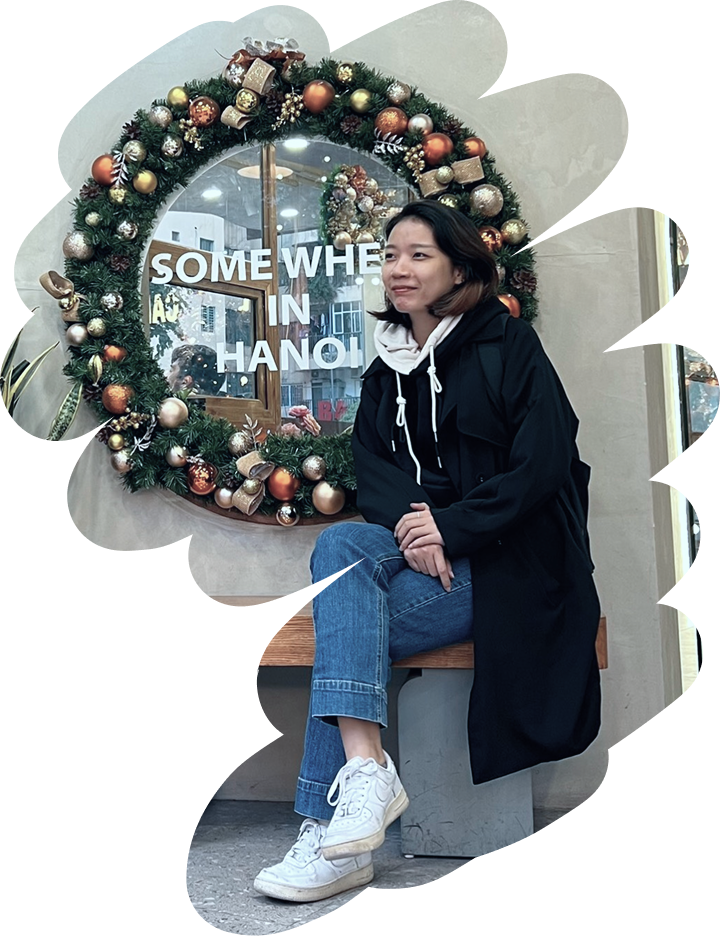

Hi! I’m Trang (Tara),
I am an “organic intelligence” who loves thinking, finding ideas, and creating solutions through design. I’m not the best at self-promotion, but that’s what a portfolio is for…
Why and how I became a UI UX designer?
I did not know UI UX was a thing when I chose Marketing as my major in 2014. After graduating, I spent years working in marketing, utilizing my creativity and analytical mindset in connecting brands and customers. During that journey, I got the chance to overlook my brand’s applications (bodyKey app) and later become project manager for creating the Nutrilite Health Run app. And that’s when I realized: Product design is at the intersection of all the strengths that I have discovered through my professional career Despite the love for brand marketing, I found product design was the thing I wanted to pursue. Fast forward to now, I’m in Vancouver, working as a UI UX designer and sharpening my skills towards becoming a product designer in the future.
What shapes me as a designer (and as a person)?
Adaptable Practical Goal-oriented Took me years of experimenting in different working environments, taking a broad range of responsibility, and analyzing feedback to condense into these 3 words that best describe me. These qualities make me a reliable team member, employee, leader, and friend. It also keeps me moving forward and becoming a better person and a better designer.
What keeps me curious?
I am not just interested in creating beautiful designs. I’m also curious about the whole process from creating to bringing that design to life, shifting the final product to users and customers. That’s what drives me in learning about programing alongside with design and aiming to become a product designer soon.
Outside of work...
I’m all about balance: sketching whatever inspires me, connecting with friends (through board games, coffee chat, and hiking), diving into movies, and enjoying the beauty of life through randomly admiring the world around me; also a bit of self-improvement like learning languages and building strength at the gym. 你好，我现在在学汉语. Bonjour, je suis débutante en français.
Explore my latest experiments
For more info, check out my resume
